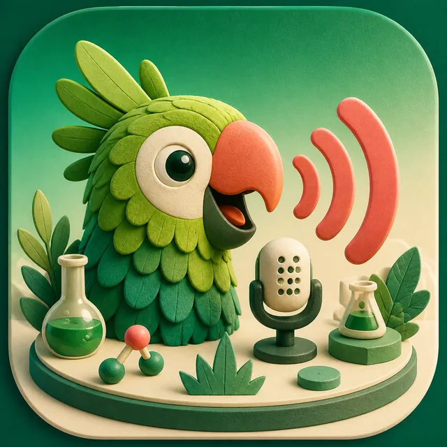
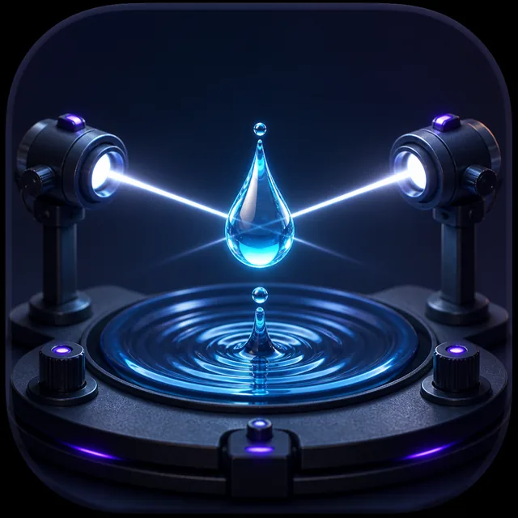
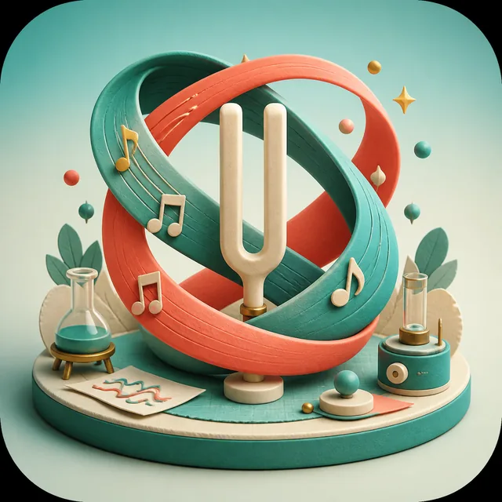
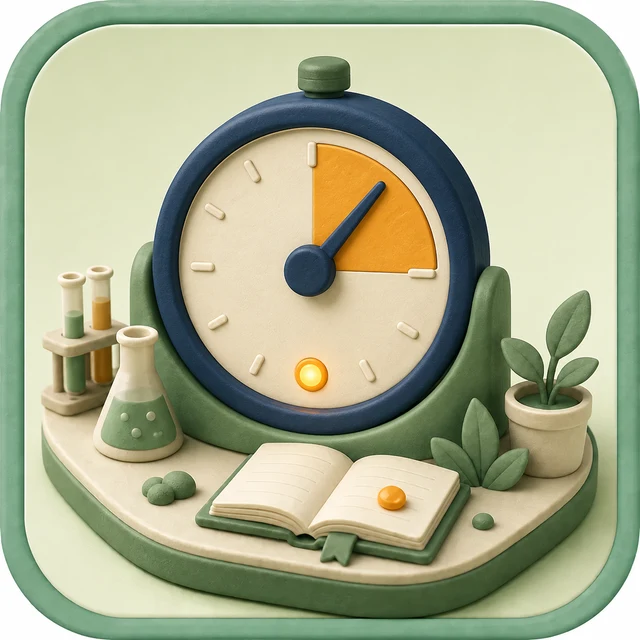

PICK & PLAY
小さな実験、
すぐ遊べる。
気になるアイコンをタップしてスタート。
長押しで詳しく
3D 06 3D空間実験室

05 オウム返し
04 Water Strobe
03 HamoLab
02 学習タイマーシミュレーター
PICK & PLAY
気になるアイコンをタップしてスタート。
長押しで詳しく

05 オウム返し
04 Water Strobe
03 HamoLab
02 学習タイマー